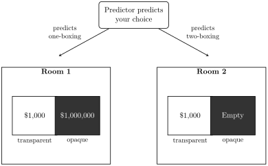

This chapter examines Newcomb’s problem, a decision under risk in which the states are probabilistically dependent on the choices but not causally dependent on them, so that it is controversial whether MEU or MCEU applies. It presents the arguments for one-boxing and for two-boxing, including the “why ain’cha rich” argument, the two-boxer’s lack-of-opportunities reply, and the transparent variant of the problem.
In the last chapter we learned that there are two different kinds of decisions under risk: those where the states are probabilistically independent of the choices and those where they are not. The difference is important because different norms apply depending on the type of decision we are faced with. If the states are independent of the choices, then the MEU norm applies, whereas if they are not, the MCEU applies.
In this chapter we are going to examine a kind of decision where the states are probabilistically dependent on the choices, but nevertheless there is a controversy as to whether we should apply MEU or MCEU. This is because the probabilistic dependence is not accompanied (and explained) by a causal dependence. In cases like that, it is not obvious which norm we should apply.
Predictor is an agent who is extremely good at predicting people’s choices. He is not infallible. In fact, Predictor’s track record shows that he has made the right prediction about people’s choices around 90% of the time. It is crucial to realize that, although Predictor is very good at predicting choices, he is not a supernatural entity that can travel in time towards the future to see what your choice is. He is simply a very good student of human psychology, and has been predicting choices (and learning from whether his predictions are true or not) for a long time. This time, Predictor will predict your choice in Newcomb’s problem.1
In front of you there are two boxes: a transparent one and an opaque one. You can see that there are $1,000 in the transparent box, but you cannot see the contents of the opaque box. You can either pick both boxes and keep their contents, or pick just the opaque box.
If the foregoing was all you knew about your choices, then you should obviously pick both boxes (we will henceforth call picking both boxes “two-boxing”) instead of just the opaque one (“one-boxing”). For, if you pick both boxes, then you get to keep whatever is inside the opaque box (if anything) plus the extra $1,000 in the transparent box. This is not Newcomb’s problem, and there are no controversies as to what you should do in this case.
But the twist is that you know something else about the case. You know that the contents of the opaque box were determined yesterday by Predictor, according to the following method: he first made a prediction regarding your choice today; then, if he predicted that you were going to two-box, he left the opaque box empty; but if he predicted that you were going to one-box, he put a million dollars inside the opaque box. The decision is represented in the following table:
| Predicted one-boxing | Predicted two-boxing | |
|---|---|---|
| One-box | $1,000,000 | $0 |
| Two-box | $1,001,000 | $1,000 |
Table 9.1 is not actually a decision matrix, because we have neither the subject’s utilities nor his or her credences. But we can assume that the subject’s utilities are more or less linear with the amount of money to be gained in each outcome, so that the decision matrix with utilities looks something like the following:2
| Predicted one-boxing | Predicted two-boxing | |
|---|---|---|
| One-box | 1,000,000 | 0 |
| Two-box | 1,001,000 | 1,000 |
Try it in the Decisions Lab Step through dominance on this matrix.
Now that we have utilities, we can see that two-boxing dominates one-boxing. If this were a decision under ignorance, then, two-boxing would be the only rational choice. Moreover, if this were a decision where the states are probabilistically independent of the choices, so that MEU applies, then two-boxing will also be the only rational choice. Let be your credence that Predictor predicted that you were going to one-box (so that is your credence that he predicted you were going to two-box). Then:
Since , two-boxing has the greater expected utility no matter what value takes—which is just what we should expect, given that two-boxing dominates one-boxing.
But Newcomb’s case is neither a case of decision under ignorance nor one where the states are independent of the choices. We said that Predictor is 90% accurate. We will take this to mean that he is equally reliable whichever choice you make: if you one-box, there is a 90% probability that he predicted it, and if you two-box, there is a 90% probability that he predicted that. That means that the conditional probabilities of the states given the choices are not the same:3
Dictionary:
= You one-box.
= Predictor predicts that you one-box.
If we add this information to our decision matrix, the result is the following:
Try it in the Decisions Lab Step through expected utility on this matrix.
So Newcomb’s case is a problem of decision under risk where the states are probabilistically dependent on the choices. Given the reliability of Predictor, the probability that he predicted that you are going to one-box given that in fact you will one-box is higher than the unconditional probability that he predicted that you are going to one-box (and the same goes for two-boxing). It seems, then, that the norm which applies here is MCEU rather than MEU:
Since , by MCEU, you should one-box.
There are very good arguments for one-boxing. The problem is that there are very good arguments for two-boxing as well.
The initial argument for one-boxing consists simply in pointing out the analogy between Newcomb’s case and the lazy student case. Just as in the lazy student case we should not care about the fact that not studying dominates studying because studying raises the probability of passing, so too in Newcomb’s case we should not care that two-boxing dominates one-boxing because one-boxing raises the probability that Predictor predicted that we were going to one-box, which in turn raises the probability of us ending up with $1,000,000.
The two-boxer retorts that there is a crucial difference between the lazy student’s case and Newcomb’s case. In the lazy student’s case, studying raises the probability of passing because studying has a causal effect on how well you do in the class. On the other hand, one-boxing raises the probability that Predictor predicted that you were going to one-box, but not because it has a causal effect on what Predictor predicts. We established that Predictor does not travel in time, and that what you do in the future cannot causally affect what he predicts today. Rather, what is going on is that if you have a propensity to one-box, then Predictor will have picked that up when he studied you, and so if you in fact one-box it is highly likely that Predictor predicted that you were going to one-box. But the prediction is already made by the time you have to choose, and so your choice cannot have a causal influence on how much money you get. Either the million dollars is already in the opaque box or it isn’t, and nothing you do now can change that. Therefore, you should two-box.
This two-boxing reply to the initial one-boxing argument can be buttressed by the different causal structures that the cases have. In the lazy student’s case, studying causes the student to do better in the class, and that is why it raises the probability of passing. In Newcomb’s case, one-boxing raises the probability that Predictor predicted one-boxing because the prediction and the agent’s choice have a common cause—the agent’s propensity to one-box:
It may help to make the two-boxer point more vivid to slightly change the way the decision goes, without actually changing the payoff structure of the problem. Suppose that, as you enter the room, you are given $1,000 and the opaque box. Your decision is simply whether you want to give the $1,000 back or not. The contents of the opaque box were determined, as always, by Predictor: he put $1,000,000 in it if and only if he predicted you were going to give back the $1,000. Structuring the problem this way dramatizes the two-boxer’s point: giving back the $1,000 has no effect whatsoever on the contents of the opaque box, which was fixed yesterday.4
To recap: the one-boxer’s initial argument is that MCEU is the right norm to apply to the Newcomb’s case, and that it recommends one-boxing. The two-boxer’s reply to this is that MCEU is wrong when applied this way. According to the two-boxer, we should apply MCEU only when the probabilistic dependence is underwritten by a causal dependence, because we should choose the option that has the best chance of causing a favorable outcome. Given that Newcomb’s problem does not have the right causal structure, one-boxing will not have any causal effect on what is inside the opaque box: its only relevant causal effect will be that we have $1,000 less than what we could have had.
One way in which one-boxers can push back against two-boxers is as follows. Let us assume that everyone involved thinks that more money is better than less.5 If we compare the population of one-boxers to that of two-boxers, there is a striking difference: around 90% of one-boxers are millionaires, whereas only around 10% of two-boxers are. So one-boxers taunt two-boxers: if you are so smart, why ain’cha rich?
Two-boxers must concede this point: one-boxers really do have more money than two-boxers. But two-boxers point out that neither the one-boxer’s riches nor the two-boxer’s poverty are of their own doing. Pretty much every one-boxer could have been richer than they are, to the tune of an extra $1,000. Pretty much no two-boxer could have had more than $1,000. This is because most one-boxers were choosing between $1,000,000 and $1,001,000, and foolishly left the $1,000 on the table, whereas most two-boxers were choosing between $1,000 and nothing and rationally chose the $1,000.6 We can call this the “lack-of-opportunities” reply to the one-boxer’s why ain’cha rich argument.
We can dramatize the lack-of-opportunities reply by imagining yet another small variant of the case that doesn’t affect the payoff structure. Suppose that there are two rooms. In room 1 the opaque box contains $1,000,000, whereas in room 2 it is empty. Predictor then makes his predictions as follows: if it predicts that the agents will one-box, then he sends them to room 1, whereas if he predicts that they will two-box, he sends them to room 2. The two-boxer can then say that he is not rich because he was sent to room 2, where there were no riches to be had, whereas the one-boxer is rich (despite himself) because he was sent to room 1, and it is impossible to walk out of room 1 without $1,000,000.

The one-boxer must concede that which room you are sent to determines what opportunities you have. But it’s not as if it is completely out of your hands which room you are sent to. You can make a determination to one-box, in which case you will most likely be sent to room 1! To the two-boxers’ complaint that they don’t have the opportunity to be rich, one-boxers can reply: “make your own opportunities!”
And now it is the turn of the two-boxer to concede something: he too would be a one-boxer if only he could. From the perspective of the two-boxer, Predictor is rewarding the irrational choice of one-boxing. Given that this choice is rewarded with $1,000,000, it makes sense to try to be a one-boxer. The one-boxer of course agrees that it makes sense to try to be a one-boxer, but he has two questions for the two-boxer: first, why doesn’t this mean that one-boxing is, after all, the rational choice; second, what is it with all this talk about trying to be a one-boxer, where it is the easiest thing in the world: you just have to one-box?
The two-boxer’s reply to the first question starts by making a general point: it can sometimes be rational to try to do something irrational. Suppose, for instance, that someone offers you the following deal: he will give you $1,000 today if you decide now to do something irrational tomorrow. Notice well: the $1,000 does not require you to do something irrational tomorrow; you are only required to decide today to do something irrational tomorrow. Now, there is a question as to whether you can genuinely decide to do something irrational tomorrow. For, when tomorrow comes, either you will have won the $1,000 or not. If you did, no reason to do something irrational. And if you didn’t, then it would only add insult to injury to do something irrational.7 But in any case, it would be good for you if you could decide to do something irrational. This is analogous to what the two-boxer thinks happens with one-boxing. It is an irrational thing to do, but given that it is rewarded it makes sense to try to be a one-boxer. When the time comes, however, you know that, no matter which room you are in, you are better off taking the $1,000. Hence the difficulty in carrying through the intention to one-box: faced with the actual decision, the two-boxer finds it impossible not to take the free $1,000—not out of respect for some abstract notion of rationality, but because they are $1,000 for free.
Now, if only there were a one-boxing pill that one can take in full view of Predictor, that would change things. This one-boxing pill forces one to be a one-boxer. The two-boxer would happily take such a pill before Predictor makes his prediction, for then he would be sent to room 1. Now, once in room 1, the pill-taker will do what the two-boxer considers to be irrational: he will one-box. But being irrational in room 1 beats being rational in room 2—although it doesn’t make one-boxing rational in either room.
The one-boxer can point out that the two-boxer is then committed to denying the following principle: if it is rational to force oneself to , then it is rational to . For the two-boxer has conceded that it is rational to force oneself (if possible) to be a one-boxer, and yet insists that it is irrational to be a one-boxer. But isn’t it absurd to deny that principle?
The two-boxer, of course, doesn’t think it is absurd, as just explained. But, more to the point, there is an argument that even the one-boxer must deny the principle. We must now consider a genuine variation on Newcomb’s problem: transparent Newcomb. Transparent Newcomb is a genuine variation in the sense that, unlike the two rooms variations, is not simply the same decision problem as the Newcomb case differently described, but rather has a different payoff structure. Transparent Newcomb is just like the Newcomb case except that the two boxes are transparent: you can see whether or not the $1,000,000 is in the second box. So you will face one of two decision problems, depending on which room you are sent to: a choice between $1,000 and nothing, or a choice between $1,001,000 and $1,000,000.
In either case, MCEU gives the same verdict as MEU: two-boxing is the only rational option.
Try it in the Decisions Lab Step through expected utility on this matrix.
Since , by MCEU, you should two-box.
Try it in the Decisions Lab Step through expected utility on this matrix.
Since , by MCEU, you should two-box.
The difference between the original Newcomb case and the two possible transparent Newcomb cases you may face is that the latter have extreme and independent probabilities: because both boxes are transparent, you can see what is in them, and therefore your credences for what is in them are the same whether you one-box or not. The decision in either of the transparent Newcomb cases is whether or not you want a free $1,000—or, more precisely, whether or not you choose to get what you want or not. Now, even though almost everybody, one-boxers included, agrees that two-boxing is the only rational option in transparent Newcomb,8 there are patently irrational transparent one-boxers, who one-box in transparent Newcomb. They are sent to room 1, of course, and there they leave $1,000 on the table. However, transparent one-boxers are to one-boxers what one-boxers are to two-boxers: they win millions from transparent Newcomb, whereas one-boxers gain merely thousands. If there were a transparent one-boxing pill, one-boxers as well as two-boxers would happily take it, for being irrational in room 1 beats being rational in room 2, for transparent Newcomb as much as for the original Newcomb case. Which means that even one-boxers are committed to denying the principle that if it is rational to force oneself to , then it is rational to : they think it is rational to force oneself to be a transparent one-boxer, even though they think it is irrational to be a transparent one-boxer. Therefore, one-boxers cannot complain that two-boxers are committed to denying that principle.
For each of the following, construct the relevant decision matrix (or matrices) using conditional probabilities, and compute for one-boxing and two-boxing to determine what MCEU recommends.
Redo the original Newcomb’s problem ($1,000 in the transparent box, $1,000,000 in the opaque box) assuming Predictor is only 70% reliable instead of 90%. Does MCEU still recommend one-boxing?
With reliability : and . MCEU recommends one-boxing.
Redo the original Newcomb’s problem keeping Predictor’s reliability at 90%, but suppose the opaque box contains $10,000,000 instead of $1,000,000 (the transparent box still contains $1,000). Does MCEU’s recommendation change?
With the $10M prize: vs. . One-box.
Predictor’s reliability can be represented by a number : the probability that his prediction matches your actual choice, so that and . Keeping the $1,000 and $1,000,000 payoffs fixed, find the value of at which . For values of above this tipping point, what does MCEU recommend? What about below it?
and . They tie at ; for above this, one-box, and below it, two-box.
Suppose instead that Predictor’s reliability is fixed at 90%, the opaque box still contains $1,000,000 or nothing, but the amount of money in the transparent box is increased from $1,000 to some larger amount . Find the value of at which .
The tie occurs at .